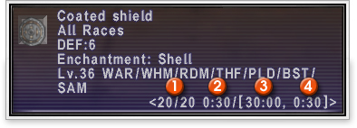

[Event-Related]
 A "Chains of Promathia"
page has been added to the mission menu. A "Chains of Promathia"
page has been added to the mission menu.
A new quest to increase the
size of a player's gobbiebag has been implemented. A player must have completed
the "Gobbiebag IV" quest in order for the new quest to be triggered.
Several new key items can now
be purchased with guild points. Using these key items allows players to synthesize
a plethora of new, never-before-seen products.
The key item obtainable at the Fishermen's Guild improves an angler's chances
of catching certain prey.
The following changes have
been made to Ballista:
-A variety of new items can be dug up using the /quarry command.
-When the special rule, "The potency of Sleep will be decreased" is
applied in a Ballista match, players will gradually build up a resistance to Sleep
if the spell is continuously cast on them.
-If the Chains of Promathia expansion pack is installed, exclusive Conflict BGM
will play during all matches.
A new activity known as "clamming"
is now available on the coast of a certain area.
Two new regions--the Tavnazian
Archipelago and Movalpolos--have been added. Also, a number of new areas have
been added to existing regions.
New "escort" quests
have been added. In addition, players will now be able to cancel a previously
accepted escort quest if they do not wish to complete it.
Dozens of new quests have been
added in all four nations, as well as the new Chains of Promathia areas.
Nomad Moogles have been placed
in several new areas.
The area a player reappears
in after completing the Zilart mission "The Celestial Nexus" has been
adjusted. This change does not affect any aspects of the story.
The number of areas where players
can fish monsters has been increased.
[Battle-Related]
A variety of new monsters have
been added to the Chains of Promathia areas.
Some of these enemies have the ability to see through Sneak and Invisible spells.
The range of select monsters'
ranged and area attacks has been adjusted.
Elementals can now use enhancing
magic.
Monsters caught while fishing,
as well as those that appear when the security system of the "matter emulators"
is in effect, will now only attack the player that caused the monster to spawn.
However, these monsters can be attacked by anyone (as long as the color of the
name has not changed to purple).
The viral attacks used by certain
Chains of Promathia monsters have new detrimental effects.
The maximum amount of experience
that can be earned from a single battle has been increased to 250 for players
from level 51-60, and to 300 for players from level 61-75. In accordance with
this change, the maximum amount of experience that can be earned during EXP chains
has also been increased.
The "Moogle Merit Management"
system that was introduced in the July 2004 version update has been expanded.
[HP/MP]
Max HP / Max MP
[Attributes]
STR/ DEX/ VIT/ AGI / INT / MND / CHR
[Combat Skills]
Hand-to-Hand Skill / Dagger Skill / Sword Skill / Great Sword Skill / Axe Skill
/ Great Axe Skill / Scythe Skill / Polearm Skill / Katana Skill / Great Katana
Skill / Club Skill / Staff Skill / Archery Skill / Marksmanship Skill / Throwing
Skill / Guarding Skill / Evasion Skill / Shield Skill / Parrying Skill
[Magic Skills]
Divine Magic Skill / Healing Magic Skill / Enhancing Magic Skill / Enfeebling
Magic Skill / Elemental Magic Skill / Dark Magic Skill / Singing Skill / String
Instrument Skill / Wind Instrument Skill / Ninjutsu Skill / Summoning Magic Skill
[Other Skills]
Enmity Increase / Enmity Decrease / Critical Hit Rate / Enemy Critical Hit Rate
/ Spell Interruption Rate
Only the skills which current level 75 job possess can be
increased.
The attributes in each of the above five categories can only be raised a limited
number of times. This is known as a “combination.”
Depending on his/her main job, raising combat skill may not necessarily allow
a player to use certain weapon skills, which can be learned through quests.
For more detailed information on Moogle Merit Management, select "Game
Guide" from the FINAL FANTASY XI top page and read the “Merit Points” section
located in the manual under "Game Basics."
The effect of Enhancing Magic
will wear off upon entering areas with level restriction or battlefields related
to those areas.
Players will now receive experience
points when fighting monsters in level-restricted areas (this only applies when
fighting in the new Chains of Promathia areas). The amount earned per battle will
be calculated using the following two methods, with the player receiving the higher
total of the two:
(a) EXP calculations made based on current party level and number of party members
* 0.5
(b) EXP calculations made based on actual party level (before level was restricted)
and number of party members * 1.0
EXP chain bonuses are based on the party level before the restriction.
When in merit point accumulation mode, all EXP earned in this fashion will be
changed to limit points.
When a player is KO'd while
in a level-restricted area, the amount of EXP lost is determined by the player's
level after entering the area.
The MP cost for the white magic
spell Dia II has been reduced from 59 to 30.
The MP costs for the black
magic spells Bio and Bio II have been reduced from 22 and 66 to 15 and 36, respectively.
In addition, the amount of damage caused by the spells will now be affected by
the caster’s dark magic skill. This adjustment also affects the damage caused
by Bio III (used only by monsters).
"Scythe" has been
added to a black mage's combat skills. Black mages will now be able to equip certain
new weapons.
The skillchain element of the
dagger weapon ability "Evisceration" has been changed.
The recast time for the paladin
ability "cover" has been lowered from 5 minutes to 3.
The level required for paladins
to use the white magic spell "Raise" has been lowered from 75 to 50.
The area of effect for bard
"etudes" has been changed to "single party member." Also,
the casting time of these songs has been substantially reduced.
The casting time of the bard
song "Goddess's Hymnus" has been reduced.
The effectiveness of the ninjutsu
"Utsusemi" now relies on the type of attack that is being used on the
caster. When attacked, the following five outcomes can occur:
Caster evades attack and one "copy image" is lost.
This normally occurs when the caster is hit with a single physical or magical
attack.
The number of lost copy images varies.
This normally occurs when the caster is hit with an area attack such as Whirl
of Rage. The number of copy images lost (and extra damage taken) is calculated
by taking into account the potency of the attack as well as the caster's current
ninjutsu skill level.
All copy images are lost and the caster takes damage.
This normally occurs when the caster is hit with an area attack spell such as
Firega.
The caster takes damage without losing any of his/her copy images.
This normally occurs when the caster is hit with breath, or self-destruct type
attacks.
The caster is enfeebled without losing any of his/her copy images.
This normally occurs when the caster is hit with an enfeebling spell that does
not inflict damage, such as Silence.
All enemy attacks fall into one of the above categories.
The copy images created by the spells Blink and Aerial Armor
can also be removed in the same manner as that explained under "the number
of lost copy images varies" (above).
The dragoon weapon skill "Wheeling
Thrust" has been enhanced.
Dragoons are now able to equip
select throwing weapons.
When a dragoon uses the "Super
Jump" ability during a battle, now his/her wyvern will also perform a super
jump, preventing the monster from attacking the pet. However, this jump will not
affect the wyvern's enmity.
Avatars can now participate
in skillchains and magic bursts by carefully timing the use of the ability "Blood
Pact."
The damage and accuracy of
several avatar attacks have been adjusted.
The macro command <pettp>
can be used to view a pet, wyvern, or avatar’s current TP.
The charmed pet’s TP decreasing, while it is not in the combat mode, is by design.
Avatar TP will now affect the
damage of select magical Blood Pact attacks. Just as with normal player TP, after
the attack, the avatar's TP will be reset to zero. Avatar TP does not affect physical,
enhancing, or enfeebling Blood Pact techniques, and thus will not be lost after
an avatar uses one of these abilities.
It is necessary to defeat the
monster's wyvern to complete the orb battle, "Amphibian Assault" successfully.
The "Amphibian Assault" can be accessed from Sacrificial Chamber by
using the Moon Orb.
[Item-Related]
Two new types of weapons and
armor--"enchanted" and "dispensing"--have been added.

1 -> The item's "charge" number
This number indicates how many times a player can use the item's special properties.
Example: 28/30 shows the item's special properties have been used twice out of
a total of 30 times.
Note: Only fully "charged" items can be placed on auction.
2 -> Counter
The moment an enchanted or dispensing item is equipped or used, this timer begins
to count down. When it has reached zero, the player will be able to activate the
item's special properties.
To activate these properties, select the equipment from the item menu and "use"
it.
3 -> Recast Time
The amount of time required to reuse the item's special properties.
4 -> Equip Delay
The amount of time a player must wait after equipping the item until he/she can
activate its special properties.
Mission Rank 10 conquest items
are now available. These cannot be obtained from the Ducal Guards in Jeuno.
New
vendors selling specialty goods from new regions have appeared in Windurst, San
d'Oria, and Bastok.
Several
shops are now offering new items.
A
number of new items, weapons, and armor have been introduced.
The
buying price for Padded Caps has been adjusted.
An
issue where players wearing cursed armor would "intimidate" themselves
has been addressed.
Players
can now revoke their "craftsman" (or above) status by talking to a guildmaster
when the following conditions are met:
1) The crafting skill at that guild is over 60.
2) The crafting skill at that guild is the highest of all the player's skills.
3) The player is a registered craftsman in at least one other guild.
If the player chooses to revoke his/her status in a certain guild, his/her rank
will automatically be lowered to "journeyman" and his/her skill lowered
to 60.
Several new
synthesis recipes have been added.
The
chance of catching "rusty caps" while fishing has been adjusted in several
areas.
New bait/lures
have been added.
Damage calculation of the following
weapons has been adjusted. Damage will now be more directly related to the attacker's
STR and the defender's VIT.
Musketeer's sword +1 / Musketeer's sword +2 / Musketeer Gun +1 / Musketeer Gun
+2 / Musketeer's Pole +1 / Musketeer's Pole +2 / Royal Knight Army Lance +1 /
Royal Knight Army Lance +2 / Temple Knight Army Sword +1 / Temple Knight Army
Sword +2 / Tactician Magician's Espadon +1 / Tactician Magician's Espadon +2 /
Tactician Magician's Hooks +1 / Tactician Magician's Hooks +2 / Tactician Magician's
Wand +1 / Tactician Magician's Wand +2 / Rune Blade / Rune Axe / Rune Staff /
Rune Bow / Rune Chopper / Rune Rod / Rune Halberd / Iron-splitter / Iron-splitter
+1 / Kanesada +1 / Shinkanesada / Platoon Zaghnal / Mutilator / Manoples / Manoples
+1 / Orichalcum Dagger / Triton's Dagger / Verdun / Verdun +1 / Wind Fan / Kilo
Fan / Mega Fan / Caduceus / Fukuro / HibariHibari +1 / Muketsu / Muketsu +1 /
Kheten / Kheten +1 / Faussar / Faussar +1 / Barchha / Barchha +1 / Kyofu / Kyofu
+1 / Keppu / Keppu +1 / Gust Claymore / Gust Claymore +1 / Gust Sword / Gust Sword
+1 / Gust Tongue / Gust Tongue +1 / Rune Arrow / Platoon Dagger / Platoon Sword
/ Platoon Axe / Platoon Lance / Ganko / Gunromaru / Platoon Cesti / Platoon Edge
/ Platoon Cesti / Platoon Mace / Platoon Zaghnal / Platoon Bow / Platoon Gun /
Platoon Cutter / Platoon Spatha / Platoon Disc / Tourney Patas / Meteor Cesti
/ Balan's Sword / Balin's Sword / Raifu / Gawaine's Axe / Light Boomerang / Nokizaru
Shuriken / Mantra Coin / Optical Needle / Nazar Bonjuk / Kakanpu / Behourd Lance
/ Schwarz Lance / Dreizack / Schiltron Spear / Mutilator / Havoc Scythe / King
Maker / Calveley's Dagger / Jongleur's Dagger / Stylet / Argent Dagger / Thanatos
Baselard / Taillefer's Dagger / Leopard Axe / Woodville's Axe / Kriegsbeil / Harlequin's
Horn / Kagehide / Omokage / Shinsoku / Ohaguro / Sairen / Unsho / Unji / Dusky
Staff / Himmel Stock / Archalaus's Pole / Somnus Signa / Grim Staff / Capricorn
Staff / Zen Pole / Wyvern Perch / Sealed Mace / Purgatory Mace / Shikar Bow /
Armbrust / Grosveneur's Bow / Ziska's Crossbow / Grudge Sword / Guespiere / Bayard's
Sword / Buzzard Tuck / De Saintre's Axe / Military Gun / Military Pole / Military
Harp / Military Pick / Military Spear / Military Axe / Mighty Bow / Mighty Cudgel
/ Mighty Pole / Mighty Talwar / Rai Kunimitsu / Nukemaru / Mighty Pick / Mighty
Knife / Mighty Zaghnal / Mighty Lance / Mighty Axe / Mighty Patas / Mighty Sword
/ Bourdonasse / Angel Lyre / Honebami / Prelatic Pole / Princely Sword
[System-Related]
Players
now have the option to jump directly to the FINAL FANTASY XI top page when starting
up the PlayOnline Viewer. To do this the following steps must be taken:
PlayStation®2 users -> Placing the FINAL FANTASY XI: Chains of Promathia disc
in the tray when starting the viewer will take a player directly to the FINAL
FANTASY XI top page.
Windows users -> Double-clicking the FINAL FANTASY XI desktop shortcut will
take players into the PlayOnline Viewer. By adjusting "shortcut commands"
within the viewer's main menu, a player can choose to have the FINAL FANTASY XI
desktop shortcut take him/her directly to the FINAL FANTASY XI top page.
By using the new text command /shutdown, players can log out of FINAL FANTASY
XI and the PlayOnline Viewer simultaneously. This command will shut down a PlayStation®2
user's console, while it will take a Windows user back to his/her desktop.
The following terms have
been added to the auto-translate function.
| Category |
Word/Phrase |
| Titles |
Theologian |
| Titles |
Cardinal |
| Text Commands |
/lsmes |
| Text Commands |
/shutdown |
| Location |
Rear |
| Place Names |
Manaclipper |
| Place Names |
Bibiki Bay |
| Place Names |
Attohwa Chasm |
| Place Names |
Boneyard Gully |
| Place Names |
Pso'Xja |
| Place Names |
The Shrouded Maw |
| Place Names |
Uleguerand Range |
| Place Names |
Bearclaw Pinnacle |
| Place Names |
Oldton Movalpolos |
| Place Names |
Newton Movalpolos |
| Place Names |
Mine Shaft #2716 |
| Place Names |
Tavnazian Safehold |
| Place Names |
Lufaise Meadows |
| Place Names |
Misareaux Coast |
| Place Names |
Sealion's Den |
| Place Names |
Phomiuna Aqueducts |
| Place Names |
Sacrarium |
| Place Names |
Riverne - Site #B01 |
| Place Names |
Riverne - Site #A01 |
| Place Names |
Monarch Linn |
| Place Names |
Promyvion - Holla |
| Place Names |
Spire of Holla |
| Place Names |
Promyvion - Dem |
| Place Names |
Spire of Dem |
| Place Names |
Promyvion - Mea |
| Place Names |
Spire of Mea |
| Place Names |
Promyvion - Vahzl |
| Place Names |
Spire of Vahzl |
| Place Names |
Phanauet Channel |
| Place Names |
Carpenters' Landing |
| Place Names |
Hall of Transference |
| Equipment Parts |
main |
| Equipment Parts |
sub |
| Equipment Parts |
range |
| Equipment Parts |
ammo |
| Equipment Parts |
head |
| Equipment Parts |
neck |
| Equipment Parts |
L.ear |
| Equipment Parts |
R.ear |
| Equipment Parts |
body |
| Equipment Parts |
hands |
| Equipment Parts |
L.ring |
| Equipment Parts |
R.ring |
| Equipment Parts |
back |
| Equipment Parts |
waist |
| Equipment Parts |
legs |
| Equipment Parts |
feet |
After the Chains of Promathia
expansion pack has been installed, new BGM will play at the opening screen. After
repeating several times, the BGM returns to the older version.
Certain auction house messages
have been adjusted.
[Windows Version Only]
Under the "Global"
tab in the FINAL FANTASY XI Configuration Tool, a new feature allowing the creation
of a desktop shortcut directly to the FINAL FANTASY XI top page has been added.
|